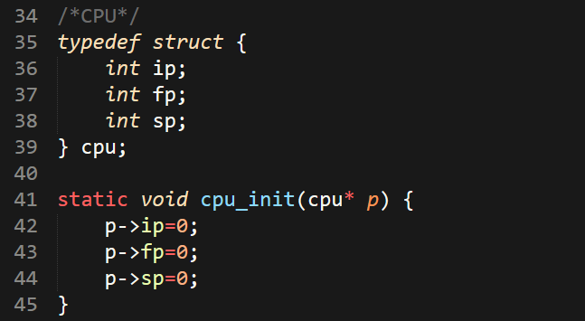

تَمت المُشاركةُ فِي 2/2/2020
كِتَابَةُ آلَة وَهميةٍ بلغةِ السِي تابع قراءة هذا الموضوع
تابع قراءة هذا الموضوع

السلام عليكم ورحمة الله وبركاتة,
في هذه التدوينة سأتكلم معك عن أحد الأشياء التي أحب برمجتها بلغة C, سي!!! اعلم انها تبدو مخيفة بعض الشئ!
إذهب وتكلم مع أحد وسيخبرك أن سي هي أصعب لغة برمجة مستخدمة حالياً بعد الأسيمبلي (لغة الآلة) وأحياناً يقال لها لغة التجميع,
المهم, اليوم سأتكلم معك عن الألات الوهمية, ولكن لماذا نقوم ببرمجة ألة وهمية ولدينا آلات حقيقية في كل مكان صحيح!؟ سعييييد جداً 😀 أنك سألت ذلك السؤال!